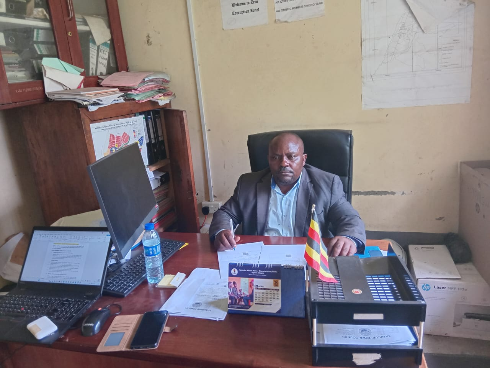
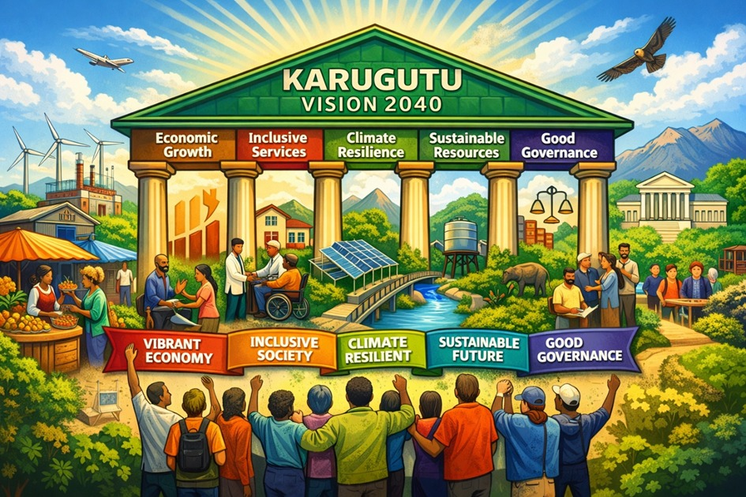
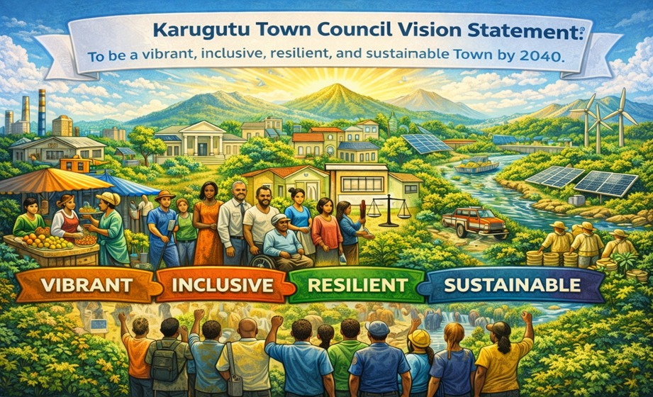
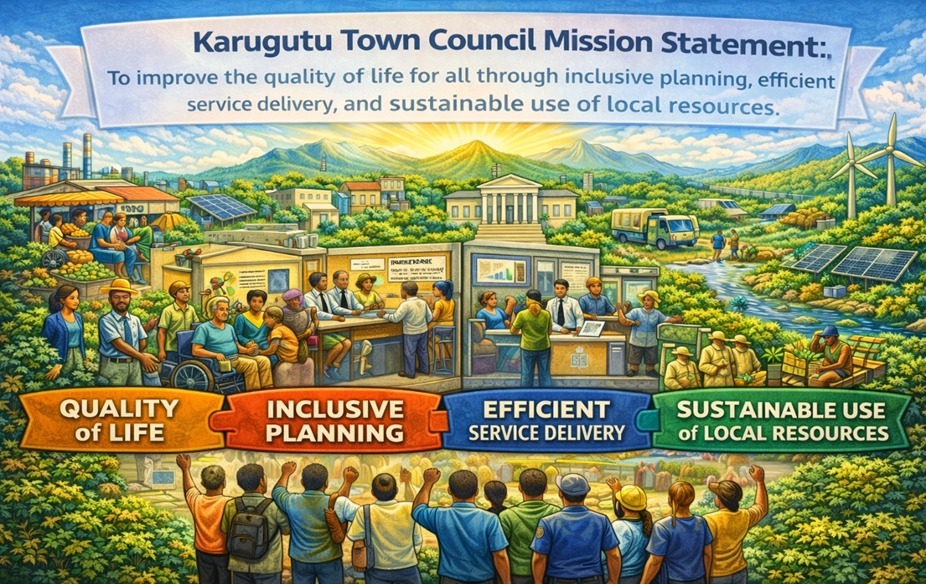
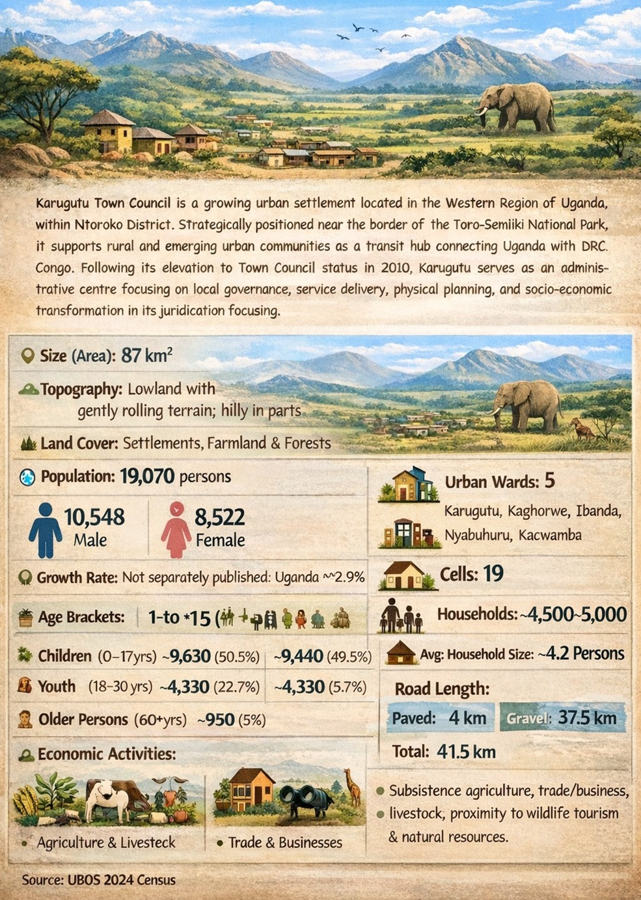

KARUGUTU TOWN COUNCIL
Serving The Community With Integrity

mayor

town clerk

senior treasurer
karugutu town council is located in ntoroko district, western region of uganda, covering an area of 87 km². officially separated from karugutu sub-county in 2010 following the creation of ntoroko district from bundibugyo district, it attained autonomous urban status under Statutory Instrument No. 48 of 2017, issued by the Minister of Local Government under Section 3 of the Local Government (Rating) Act, 2005. the council borders the toro-semliki national park and serves as the strategic administrative and service hub for the district.
read morethe mayor is the political head of the town council. he presides over all council meetings, performs ceremonial and civic functions, hosts local and foreign dignitaries, and leads the council in developing strategies for the town council's development. the mayor monitors administration, provides guidance to ward administrations, and is answerable to the council and the member of parliament. the vice mayor assists and deputises in the mayor's absence.

karugutu vision 2040: "a vibrant, inclusive, climate-resilient and well-governed town with sustainable economic growth and improved quality of life for all."

"to be a vibrant, inclusive, resilient, and sustainable town by 2040."

"to improve the quality of life for all through inclusive planning, efficient service delivery, and sustainable use of local resources."

coordinating day-to-day operations, human resources, and effective governance.
access service →| ward | electoral areas | status |
|---|---|---|
| karugutu | 5 | active |
| kaghorwe | 3 | active |
| ibanda | 3 | active |
| nyabuhuru | 4 | active |
| kacwamba | 4 | active |
| total | 19 |

the town council continues to implement its physical development plan...
read more
working with local farmers to improve agricultural output and market access.
read more
works department commences maintenance on 37.5 km of gravel roads.
read morekarugutu town council collaborates with government institutions, development partners, and civil society.

report any form of corruption to the council. together we build a transparent and accountable government.